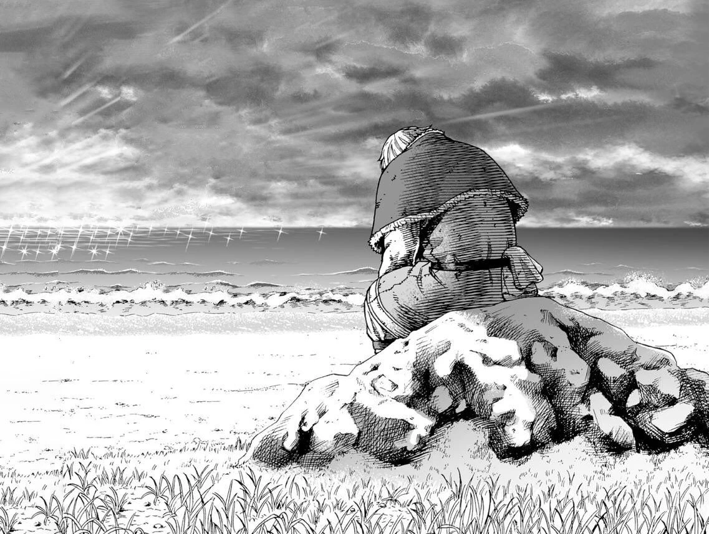
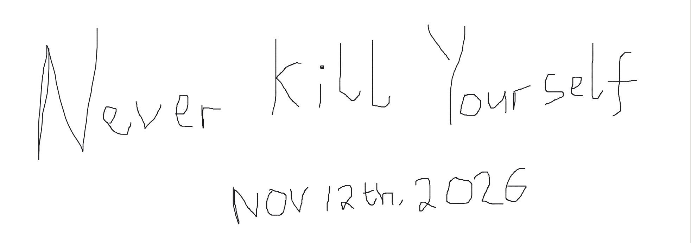

Hard Times
Things won't always go as planned. Some seasons arrive uninvited: plans fall through, money gets tight, people disappoint you, and the future gets harder to see.

Lately I've been having a tough time with life itself. I followed the rules meant to prevent seasons like this, and it came anyway. But God knows best, and I choose to see this as a time for character development.
I'm not going to dwell on it, because dwelling only makes it worse. Instead I'm asking better questions. Why don't I look for a solution? Why don't I research the problem? Problems don't fix themselves. Action does.
What I'm doing about it
- Name the problem plainly. A vague problem always feels bigger than it is, so I write down exactly what's wrong.
- Do one small useful thing every day. Finish it, however small.
- Talk to people I trust. I don't have to carry this alone. (Family and Closer Friends)
The Bible never promises a life without falling. Proverbs says the just man falls seven times, and what makes him just is that he gets up again. Paul adds that suffering builds perseverance, perseverance builds character, and character builds hope (Romans 5:3–4).
For a just man falleth seven times, and riseth up again: but the wicked shall fall into mischief.
Proverbs 24:16
If you're in a hard season too, you're not behind and you're not alone. Get up once more. Then once more after that.

☞ Awesome images to keep you going